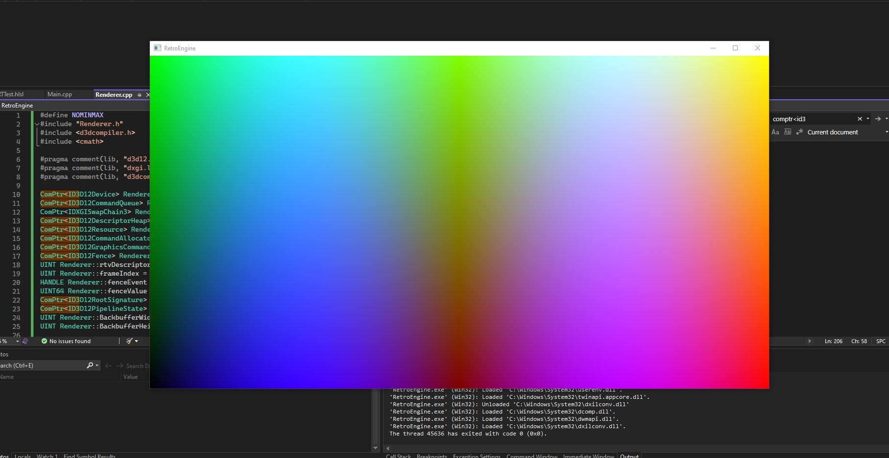
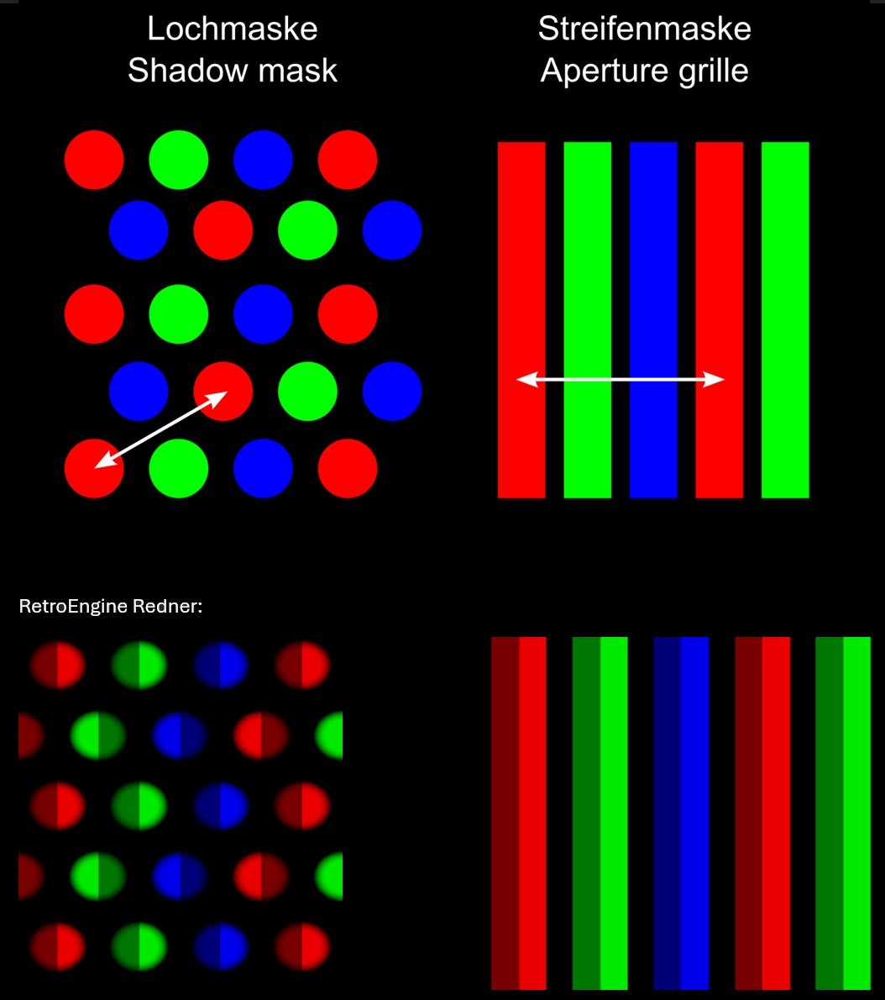
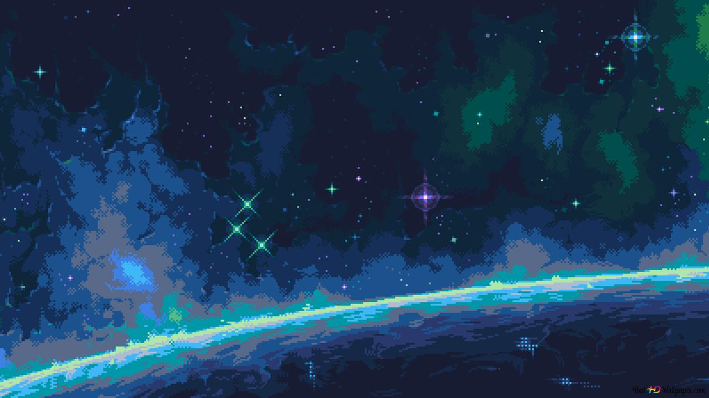
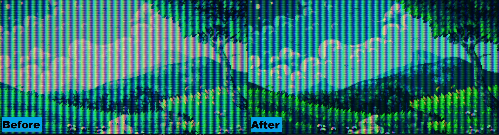
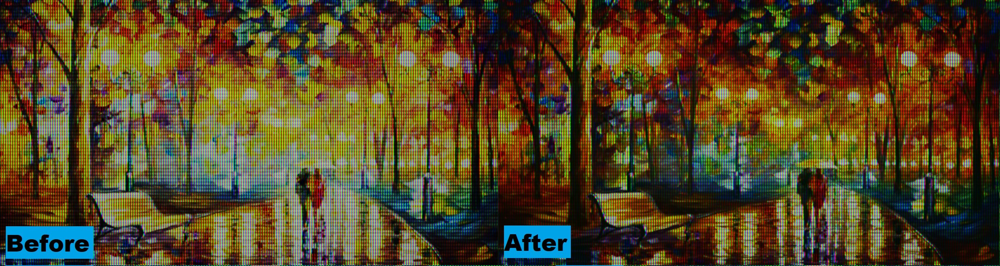
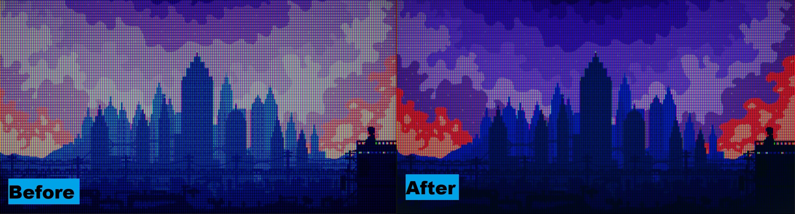

Getting Started
Having never setup a game engine or render pipeline, my first goal was setting up a self-contained Direct3D 12/Win 32 application in cpp. Its not much to look at, but this was the "birth" of my engine. A simple gpu-driven output of vertex and pixel shaders compiling 🎉! This would be the core everything else would build upon.
Part I — The Birth of the Beam
RetroEngine started as a Direct3D 12 prototype with one goal: to simulate a cathode-ray tube not as a post-process effect, but as a physically modeled display system.
When you look closely at a real CRT screen, you don’t see pixels....you see phosphors. Tiny dots or stripes of red, green, and blue light that glow when struck by the electron beam. Different CRTs used different arrangements:
- Shadow Mask: circular RGB triads like curved consumer televisions
- Aperture Grille: vertical RGB stripes used in Trinitron and broadcast PVM monitors
To begin building my physically-based CRT renderer, I needed to reproduce these layouts procedurally on the GPU. Every subpixel, every mask pattern, rendered in real time. The results can be seen in this image. The top is a reference diagram of real CRT masks. The bottom is the same pattern being generated by my engine. I taught the GPU how to draw those microscopic red, green, and blue structures that sit beneath every pixel:
This is the foundation of RetroEngine...not a post-process filter, but a true simulation of how a CRT displays an image. The first milestone was creating the world a CRT actually lives in the phosphor mask.
Each pattern is generated procedurally in the shader (no textures, no lookup images). Every dot and stripe comes from math. This was where the renderer first felt alive: real-time phosphor geometry instead of static color blocks.
Part II — Teaching Light to Move
When a CRT draws an image, it doesn’t show all the pixels at once. A focused electron beam scans across the screen, lighting up phosphors that glow and fade over time. The next milestone was teaching RetroEngine to do the same.
The renderer now simulates a moving scanline that excites each phosphor with brightness-dependent decay. Every pixel lives and fades on its own schedule, just like glass and light would behave in the real world.
- Beam behavior and afterglow: the renderer now models a traveling raster sweep that excites phosphors with realistic decay.
- Real texture input: instead of test bars, RetroEngine now renders any image through the CRT pipeline.
- Physically-based blending: a Gaussian beam profile with nonlinear response gives each subpixel its own soft halo.
- Performance: running stable at 60 FPS with full control over mask type, pitch, scanline depth, and decay timing.
For the first time, the renderer showed motion. Pixels glowed, trailed, and faded naturally, even though it was just a static image. It wasn’t just drawing color anymore—it was drawing light.
The Comparison
Below is the original test image I fed into the renderer, followed by the same frame viewed through the beam and phosphor simulation stage. It needs help, but every scanline and RGB triad is driven by the same math that powered real displays.
Part III — Persistence, Optics, and the Feeling of Glass
Once the beam simulation came alive, the next step was to make it feel physical. Real CRTs don’t just draw a new image each frame; they blend light over time. A phosphor doesn’t stop glowing the instant the beam passes—it fades, mixes, and diffuses through glass. I rebuilt the renderer around that idea.
The new pipeline runs in two temporal passes that model how energy accumulates on a screen:
- Pass A — Persistence Builder: merges new beam emission with decayed light from previous frames stored in HDR ping-pong buffers. This is what gives the display its sense of inertia—light that remembers.
- Pass B — Composite & Output: applies optical shaping: gamma curves, phosphor weighting, and a faint lens diffusion that mimics how light scatters inside a glass faceplate.
After tuning the response, the image finally behaved like something behind glass:
- Dual-zone gamma shaping deepened shadows without crushing midtones
- Phosphor weighting balanced warmth between the green and red channels
- Soft low-frequency diffusion added the kind of analog bloom you only get from glass
For the first time, RetroEngine felt less like a digital renderer and more like a physical device. Deep, film-like blacks replaced milky grays. Color started to carry energy instead of just hue. Motion left traces of light that looked alive. Here is a slideshow of some test textures I ran through it:
Part IV — The Mystery of the Muted Greens
During a refactor, I finally found the bug that made every scene look flat. Textures were loaded as sRGB but sampled as linear UNORM, so the shader was reading gamma-encoded values. The CRT pass then applied its own shaping, and the GPU encoded again — effectively double darkening the image.
Fixing it meant rebuilding the color pipeline:
- Textures flagged as sRGB so the GPU linearizes automatically
- CRT pass operates entirely in linear HDR (R16G16B16A16_FLOAT)
- Swapchain performs a single sRGB encode at output
Once fixed, the change was immediate. Greens came alive. Blues regained depth. The glow math behaved like real energy. The renderer finally felt unified from input to glass.
  Part V — The Cube Lives
With the CRT system stable, I gave it something real to draw: a simple 3D cube. I added a test scene with a camera, transform matrices, and a mesh loader. That cube became the first object rendered through the full beam and persistence pipeline.
- A geometry pass renders to an HDR buffer
- The buffer feeds into the CRT system as its signal
- The beam simulation, phosphor decay, and optical bloom process it in real time
It was finally time to fire it up for the first time and see the 3D world getting passed into the renderer:
Watching that cube flicker through the simulated raster proved it. RetroEngine isn’t a filter. It’s a viewport model — a virtual CRT capable of showing real worlds.
Closing Thoughts
This first stage was about one thing: light. Understanding it, shaping it, and making it behave the way it did on glass. The CRT system is alive now. Next up is giving that light a world to illuminate, moving beyond a simple test scene and expanding the engine's capability to support fully constructed worlds.